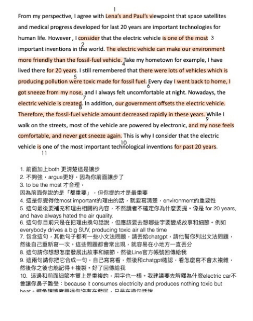
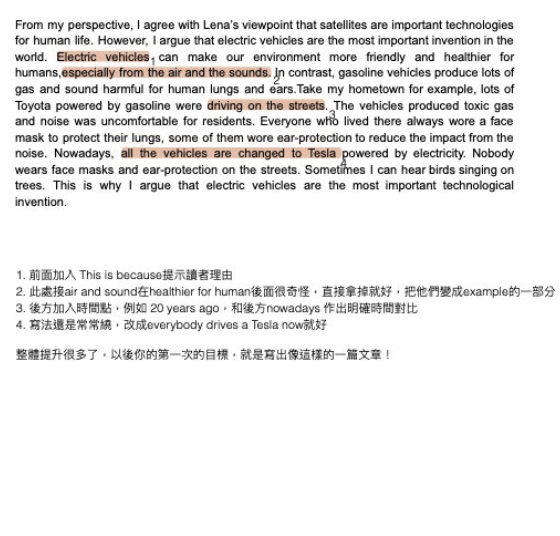

照 David 老師教的 echoing 來練 intonation，也會模仿 David 老師的錄音檔，個人覺得這個方法滿有效的。KQJ｜David+Rosa 精華班心得
Student Results
學員回饋與高分路徑
從卡分到達標，學員的共同點不是盲目加量，而是找到自己的丟分模式，並把每一次練習都變成下一步修正。
真實回饋整理
同學最常提到的，不是教材多，而是「終於知道怎麼練」
David 的課真的是超乎我想像之外的棒。在上課之後，我才知道不應該只是直接回答問題，而是要去想題目背後的 why。HiAFu｜不像補習班的良師益友
他教我們創造自己的 WordBank，考試時因為事先有 WordBank 所以能夠信心十足，而且言之有物。學員心得｜WordBank 訓練
我個人最推薦 David 老師的 consultant time，可以直接得到 feedback，讓我能在短短幾分鐘有啟發性的進步。NYandLA｜口說進步心得
David 老師會幫大家組讀書會。我在讀書會真的進步非常多，也跟讀書會同學成為朋友。學員回饋｜讀書會陪跑
多次滿分證明他深知口說得高分的技巧，所以聽從他的建議好好做練習，相信就能突破瓶頸。NYandLA｜口說突破
從心得看方法
有效進步通常不是某個神招，而是練習被正確校準
把心得拆開來看，會看到三個共同點：有人指出問題、練習有驗收方式、讀書不是自己硬撐。
- Echoing 用來改善 intonation、語速與自然度。
- Word Bank 讓口說與寫作不再臨場硬想。
- 讀書會讓練習有夥伴、有節奏、有討論。
- 顧問 feedback 讓錯誤不只是被改掉，而是被理解。

Version 1
找出問題，提供建議

Version 2
確認進步，再次調整

Version 3
確立範本，設定目標
目標分數設定
先知道學校要什麼，再決定課程期間怎麼衝
常見英、紐、澳研究所門檻落在總分 6.0-7.0，新加坡一些名校可能要 7.5；許多學校也會看單科門檻，寫作與口說尤其常見。
| 目標 | 課程中會特別處理 | 適合策略 |
|---|---|---|
| IELTS 6.5 | 基礎題型、時間分配、單科弱項補足 | 1-2 個月集中建立答題流程與模考節奏 |
| IELTS 7.0 | 寫作論證、口說延伸、閱讀定位速度 | 2-3 個月搭配批改與模考校準 |
| IELTS 7.5+ | 高分穩定度、單科門檻、考前失誤控制 | 3 個月完整路徑，定期與顧問檢核錯題模式 |
下一步
想知道你的卡分點在哪裡？
立即報名雅思課程時，可以直接帶著目前分數、目標學校與考試日期，顧問會協助判斷準備路線。